当AI创业者走上牌桌，概率不再是理论——每一手牌都是一次人心博弈。
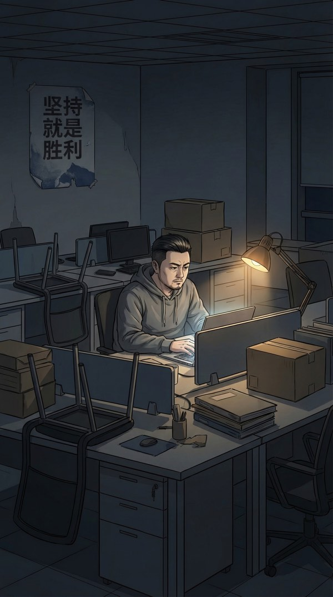
办公室的灯几乎全灭了。只剩下我桌上那盏台灯，孤零零地亮着，像ICU里最后一台还在工作的仪器。
三年前我在这里写下第一行代码，三年后这里只剩下我一个人和一封邮件。
屏幕上的字很清楚。「经董事会决议，即日起终止一切投资协议。」
每一个字都认识，连在一起却像另一种语言。三年心血，一封邮件归零。
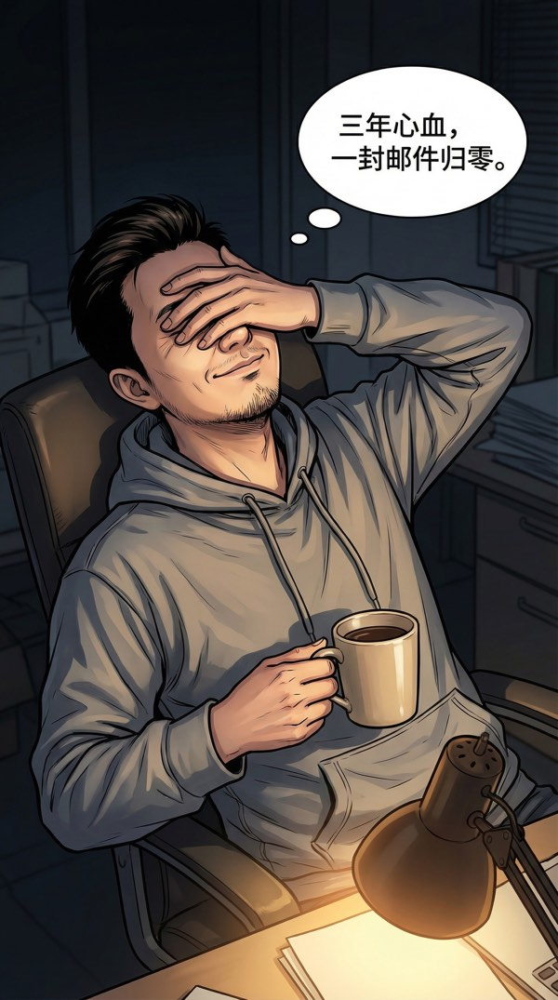
我往椅背一靠，手捂住了脸。不是想哭——是太累了。连续三天融资谈判全崩，团队核心被挖走四个，昨天投资人的电话还在说"我们非常看好你们"，今天就变成了这封邮件。
三年心血，一封邮件归零。挺好的，至少省了个仪式感。
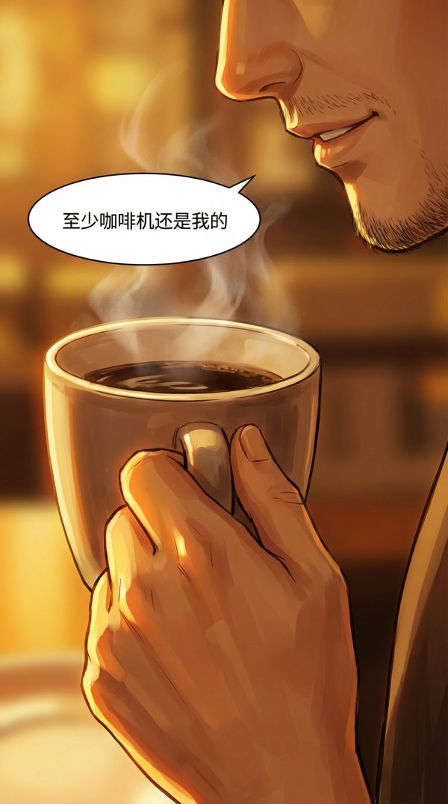
低头看了眼手里的咖啡，居然还是热的。我忍不住笑了。
至少咖啡机还是我的。这是我用私人钱买的，写在合同附件里——别问我为什么连咖啡机都要写进合同，搞AI的人就是这么严谨。
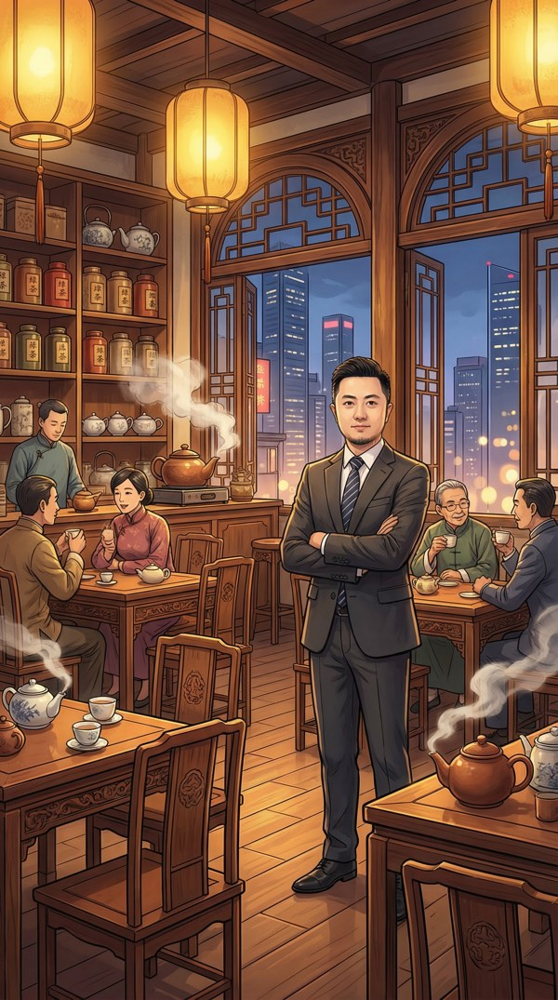
不想回家。家里只有一只会看我脸色的猫。我拐进了楼下那家开了二十年的老茶馆——这种地方，不问你为什么来，也不问你为什么不走。
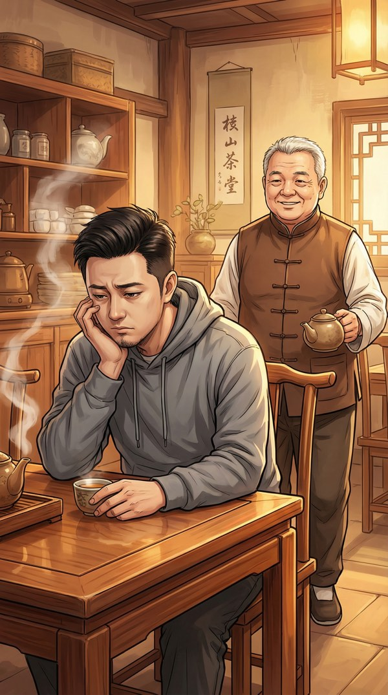
刚坐下没两分钟，一个圆脸老头端着茶壶过来了。花白头发，笑眯眯的，穿着件褐色马褂，看起来像退休的语文老师。
老周：小朱啊，脸色比我的浓茶还苦。来，喝一杯，今天的是正山小种。
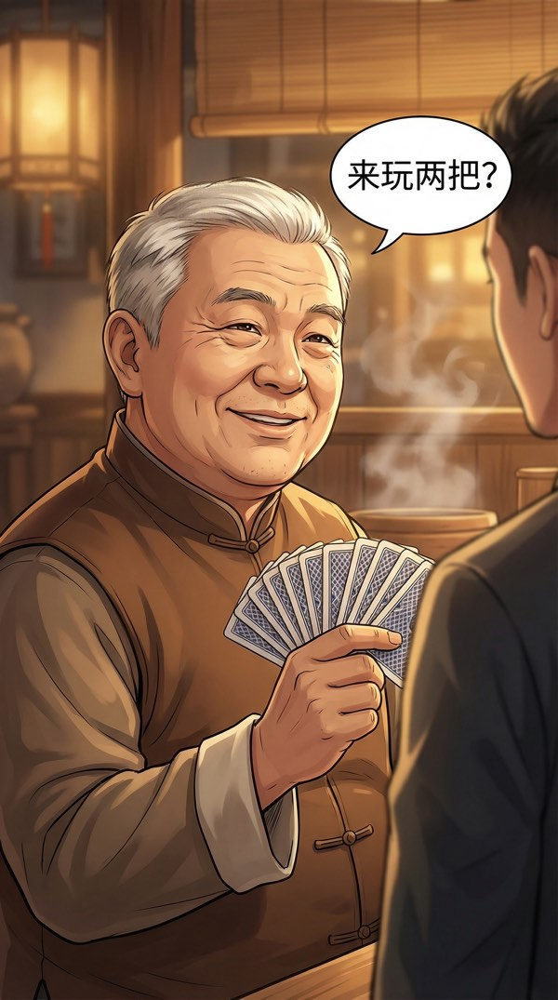
他不知道从哪变出一副扑克牌，笑得像个准备恶作剧的老顽童。
老周：来玩两把？
我本想拒绝。我现在的心情大概只适合发呆和自我怀疑。
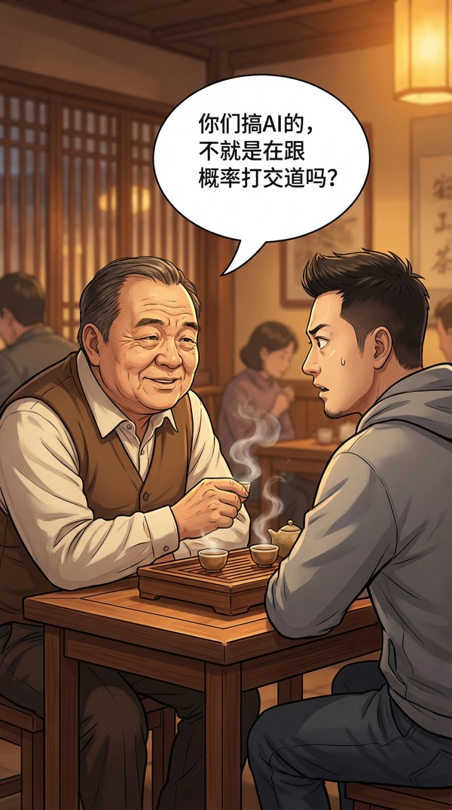
但老周接下来的一句话，精准地戳中了我的技术人本能。
老周：你们搞AI的，不就是在跟概率打交道吗？
我看了他一眼。这个茶馆老板，说话的方式不太像卖茶的。
有意思。
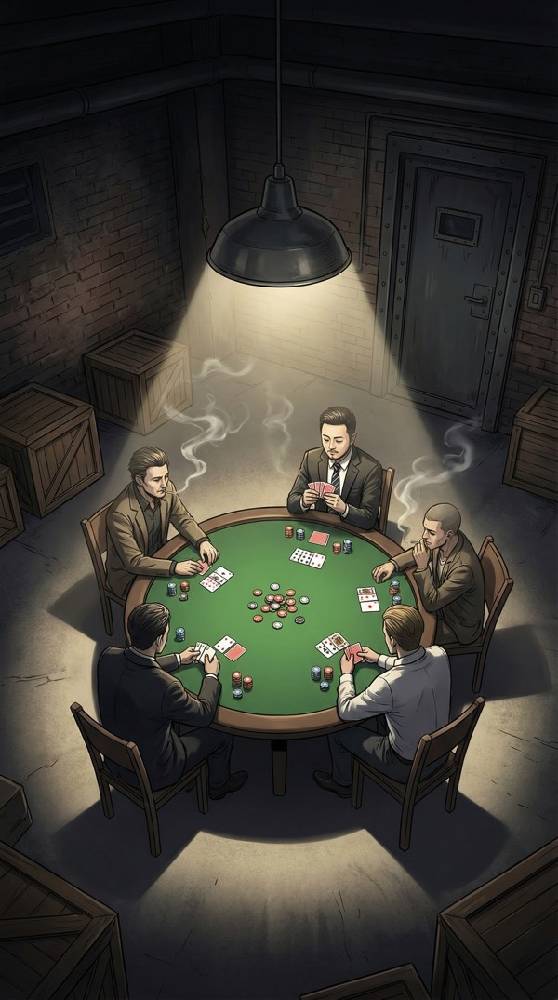
茶馆的后门连着一条窄巷子，巷子尽头是一扇不起眼的铁门。铁门后面，是一个完全不同的世界。
五人桌，绿毡面，头顶一盏聚光灯把桌面照得像手术台。周围的黑暗把一切压缩到这张桌子上——在这里，整个宇宙只有五个人和一副牌。
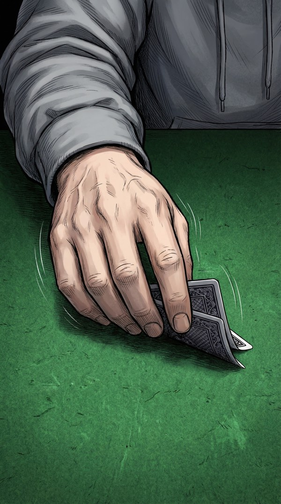
我拿起牌的时候，手在抖。
不是怕输钱——创业三年，什么钱没亏过？是那种久违的肾上腺素冲击。上一次这种感觉，还是产品第一次上线的那个凌晨。
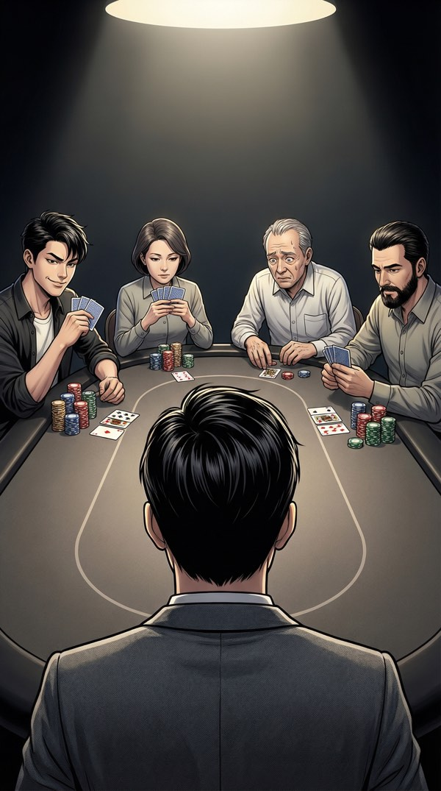
扫了一圈对手。一个穿皮衣戴金链的年轻人在疯狂弹筹码，一个沉默的中年女人盯着自己的牌一动不动，一个紧张兮兮的老头不停擦汗，还有一个留胡子的男人面无表情。
五个人，五种性格。这不就是五组数据吗？
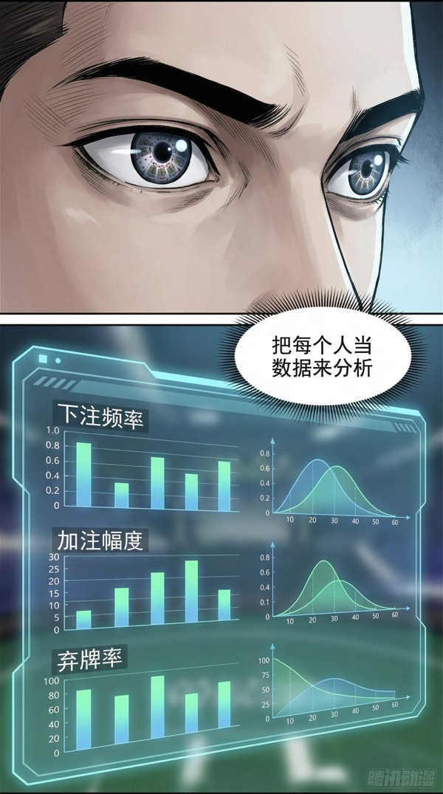
我的大脑自动切换到了工作模式。每个人的下注频率、加注幅度、弃牌率——这些不就是用户行为数据吗？我以前用这套方法分析DAU，现在用来分析对手。
把每个人当数据来分析。搞AI的人在牌桌上，就是降维打击。
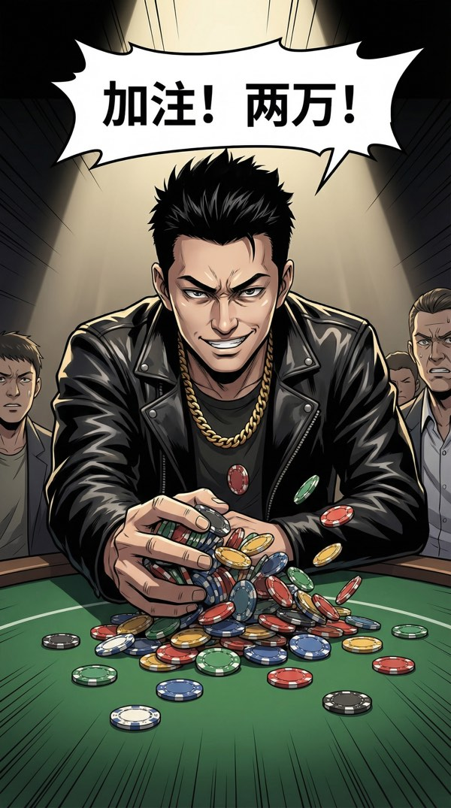
金链哥率先发难。他把一摞筹码推到桌中央，力道大得筹码差点散架。
金链哥：加注！两万！
其他三个人瞬间安静了。中年女人皱眉，老头直接弃牌，胡子男在思考。
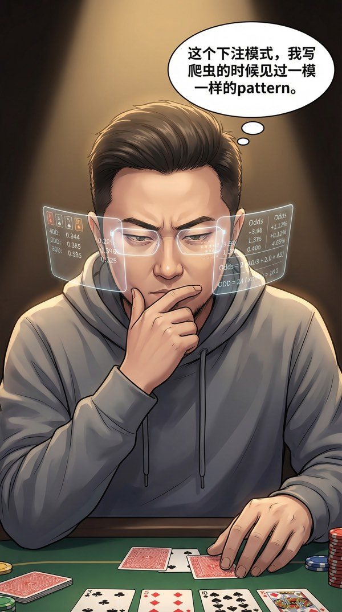
我盯着金链哥看了三秒。他的下注速度太快了——从拿到牌到加注不超过五秒。而且加注的时候身体前倾，像在示威。
这个下注模式，我写爬虫的时候见过一模一样的pattern。真有实力的数据不会这么着急展示自己——越急着表现，越可能是空包弹。他在bluff。
第一手牌，牌面中等。对手疯狂加注，直觉告诉我他在虚张声势。
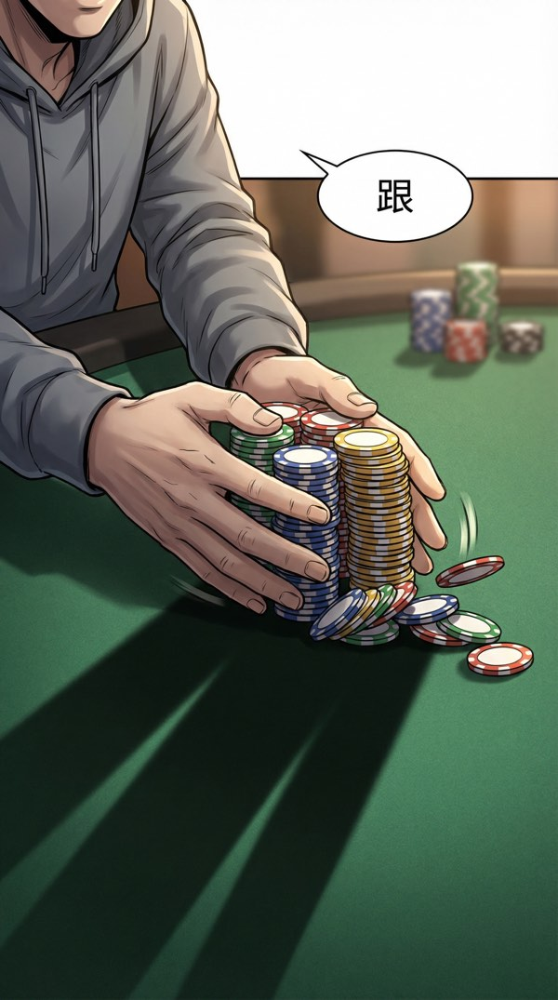
我没有犹豫。筹码推出去的那一刻，手不抖了。
我：跟。
一个字，但整张桌子的气氛变了。
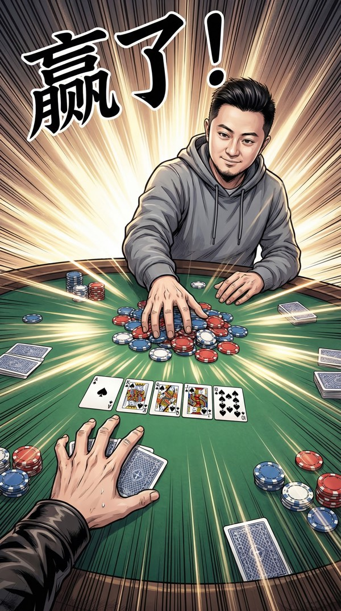
翻牌。金链哥的脸从嚣张变成了空白——果然是bluff。我的牌不算大，但比他那堆垃圾强多了。
筹码哗啦啦地推到了我面前，像是某种隐喻：有时候赢不需要最好的牌，只需要看穿对手。
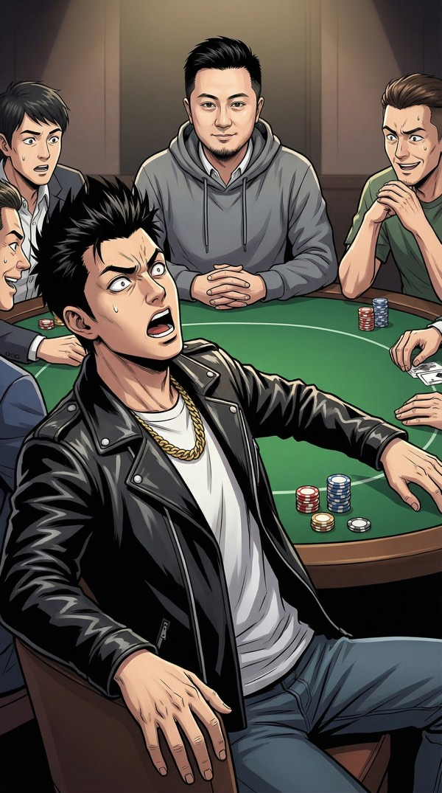
金链哥嘴巴张了张，想说什么又咽回去了。他的筹码少了一大截。
其他人看我的眼神变了——从"又一个送钱的"变成了"这人不简单"。
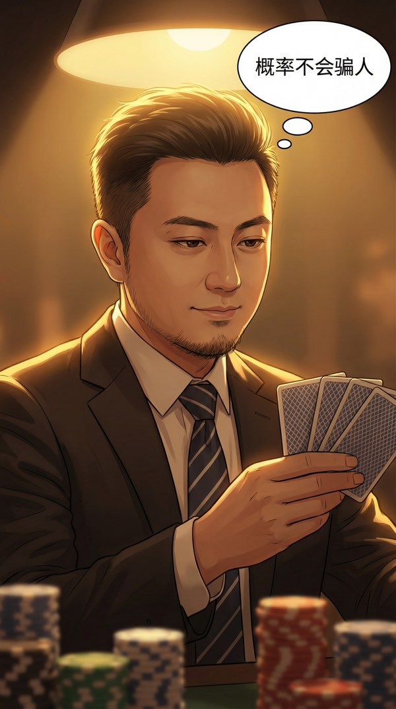
概率不会骗人。人会骗人，但他们骗人的方式本身就是数据。
第一手牌，验证通过。这不是赌博——这是另一种形式的编程。
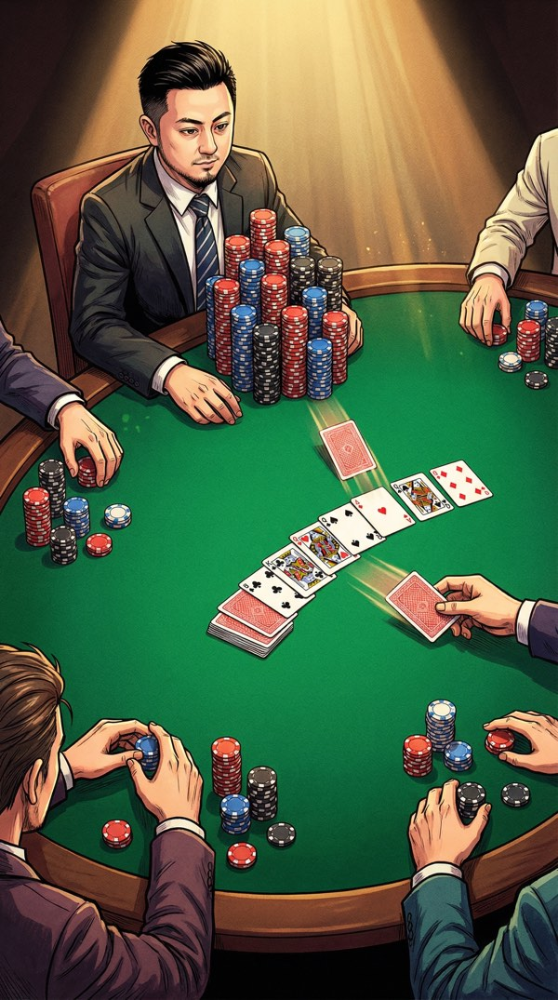
接下来的八手牌，我赢了六手。
不是运气。每一次下注前，我都在心里跑一遍模型：这个人上一轮的行为模式是什么？他的筹码还够几轮激进操作？他现在的心理压力值是多少？
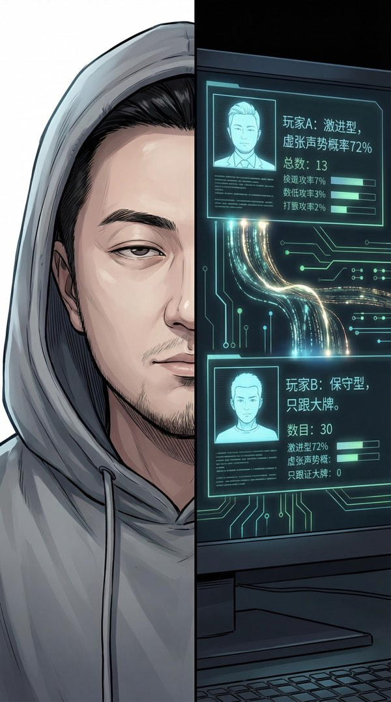
中年女人的弃牌阈值是底池的30%——超过这个数她就放弃。胡子男是纯概率选手，只跟好牌。金链哥已经进入了tilt状态，情绪化下注越来越多。
他们以为我在打牌。其实我在做用户画像。每个人都是一个预测模型，我只是在找他们的loss function。
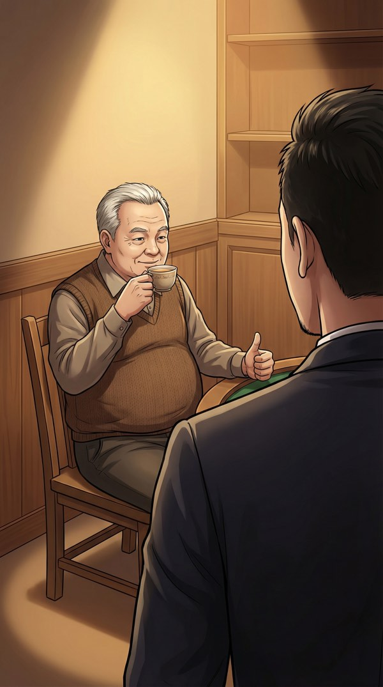
角落里，老周端着茶杯看了整场。他脸上的笑容从和蔼变成了一种我看不太懂的表情——像是猎人看到猎物走进了圈套，又像是园丁看到种子发芽。
他对我竖了竖大拇指。
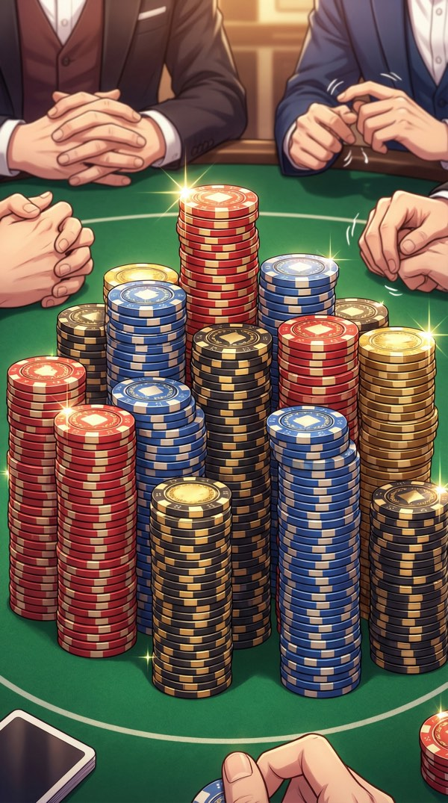
我面前的筹码已经垒成了小城堡。红色蓝色黑色金色，在灯光下闪着光泽。
说实话，我已经不在乎这些筹码值多少钱了。那种感觉更像是——我找到了一种新的语言，而我居然天生就会说。
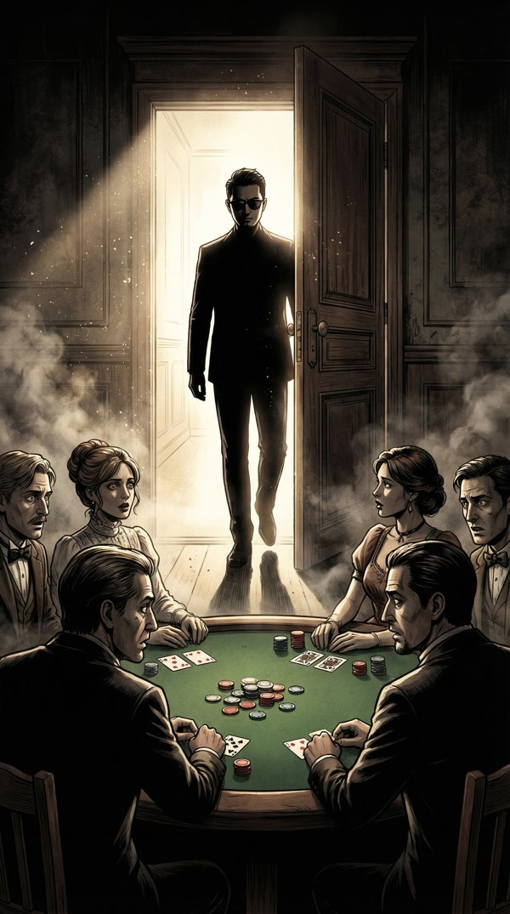
门开了。
不是推开的——是被人一脚踢开的。厚重的木门撞到墙上，走廊的灯光涌进来，像舞台突然打了一盏追光。
所有人的头同时转过去。
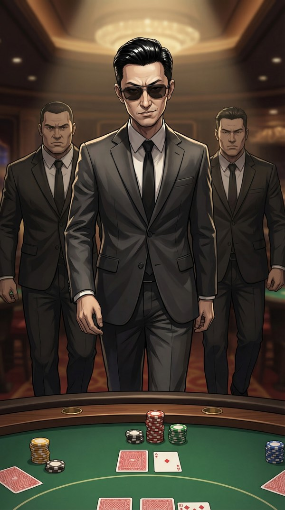
来人瘦高个儿，鹰钩鼻，大晚上戴着墨镜，油光锃亮的背头梳得一丝不苟。一身深灰色高定西装，领带夹上镶着颗小钻石——恨不得全世界都知道他很贵。
两个壮汉跟在身后。这排场，不像来打牌的——像来收保护费的。
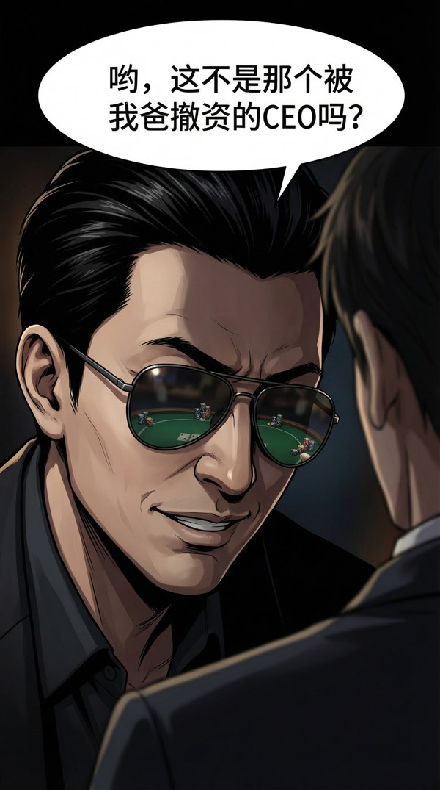
他的目光隔着墨镜扫过全场，最后落在了我身上。停了两秒，嘴角挑起一个弧度。
林少卿：哟，这不是那个被我爸撤资的CEO吗？
全桌安静。连金链哥弹筹码的手都停了。
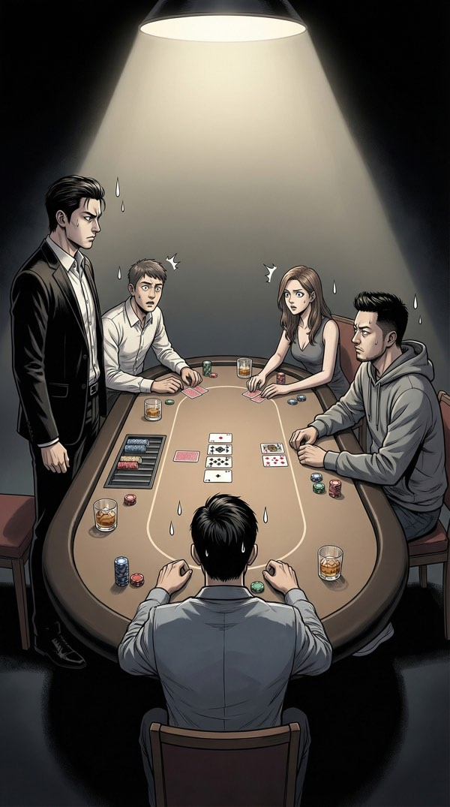
所以——背刺我的那个投资人，有个喜欢在地下牌局挥金如土的儿子。世界真小，小到连巧合都像是安排好的。
投资人的儿子......有意思。
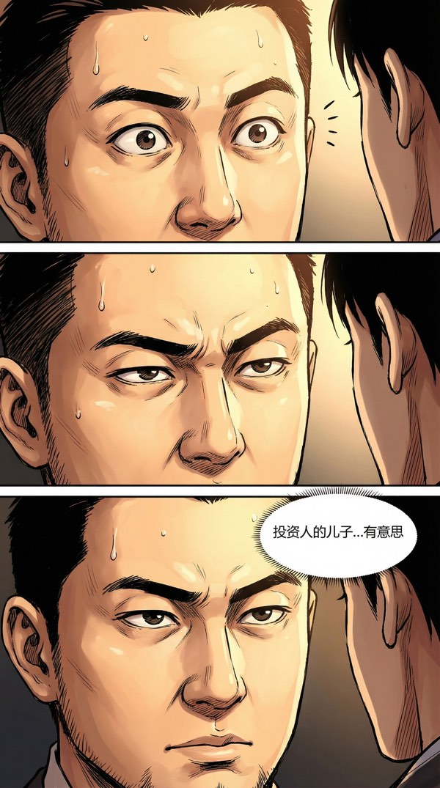
我感觉自己的表情在两秒之内完成了三次切换：惊讶、辨认、然后——冷静。
三年创业练出来的最有用的能力不是写代码，是在任何场合控制自己的情绪。
他当众嘲讽我。桌上所有人都在看我怎么反应。
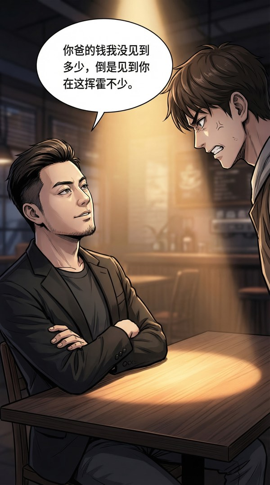
我站起来，把皱巴巴的卫衣拉链拉下——里面是一件黑色休闲西装。出门的时候随手套的，没想到现在派上了用场。
我直视他墨镜里自己的倒影，声音不大不小：
我：你爸的钱我没见到多少，倒是见到你在这挥霍不少。
老周在角落里差点呛到茶。小鱼——那个短发女生——嘴角微微上扬。
林少卿的脸色变了。从嘲讽变成了铁青。
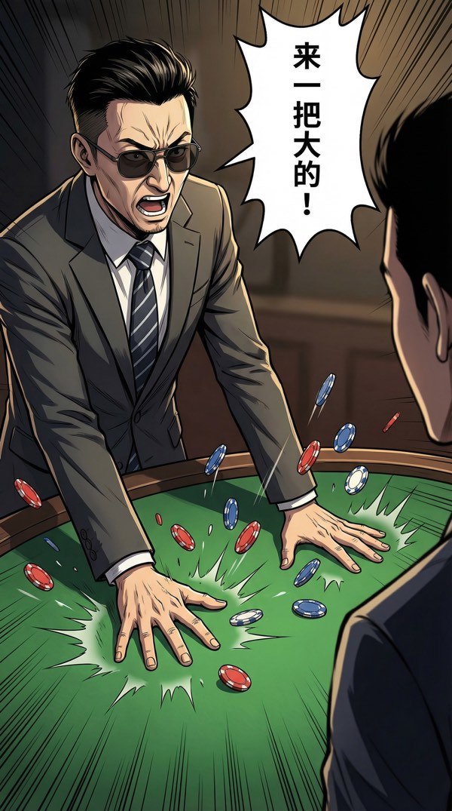
林少卿双手拍在桌面上，筹码跳了起来。那副"我很优雅"的伪装碎了一地。
林少卿：来一把大的！
他的声音带着气——不是因为想赢，是因为刚才在所有人面前被怼了。这种人最危险的时候不是理性的时候，是被踩了尊严的时候。
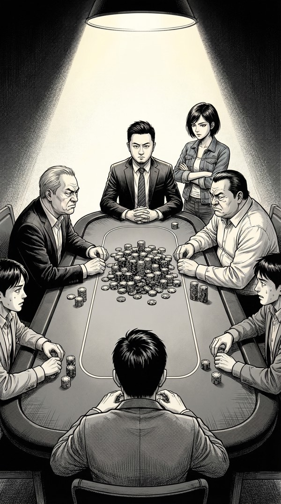
底池翻了十倍。其他三个玩家直接退出——这已经不是他们玩得起的级别了。小鱼抱着胳膊退到一边，但没走，她的眼神说：我要看这场好戏。
牌桌上只剩两个人。我和他。
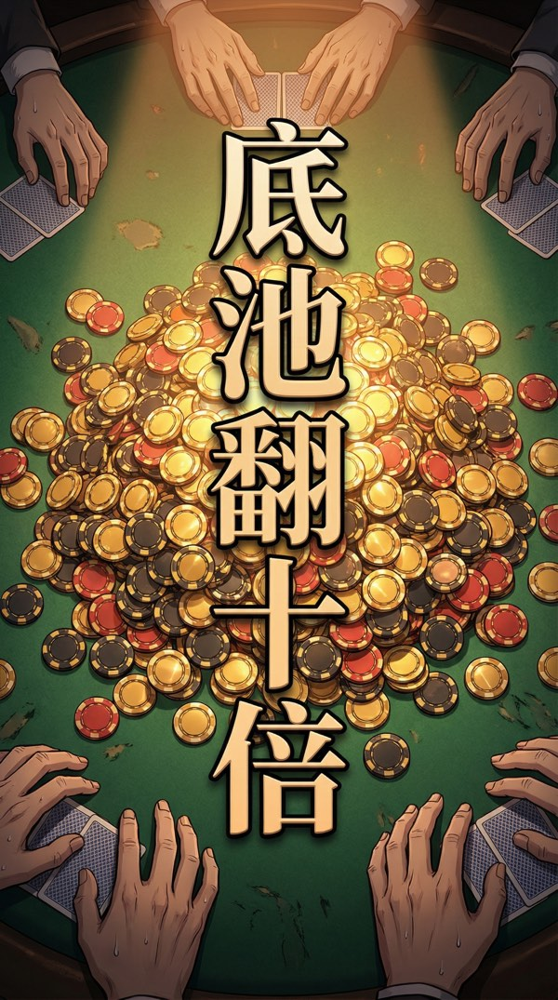
桌子中央的筹码堆成了一座小山。金色、黑色、红色，灯光下像一堆小型金属雕塑。
这些筹码代表的数字，够我之前发半年工资了。但奇怪的是——我此刻完全不紧张。甚至有一种创业时debug到凌晨四点、终于找到那个bug的兴奋感。
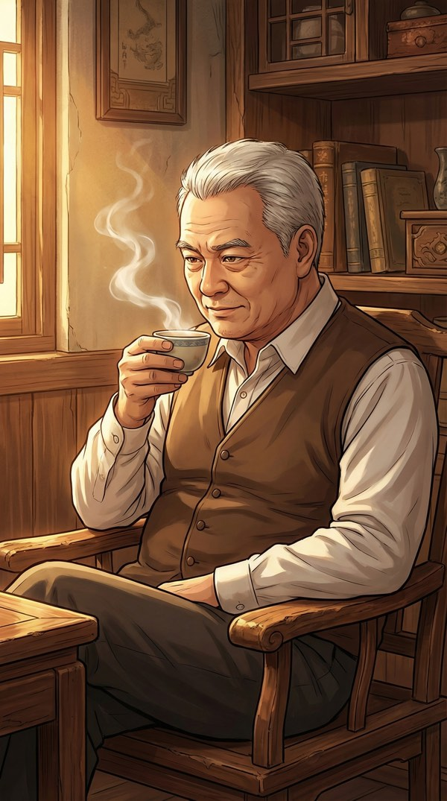
老周还是那个姿势，端着茶，笑眯眯的。但如果你仔细看，他的眼睛里没有一点笑意——那是一种极度专注的观察。
这个茶馆老板，到底是什么来头？
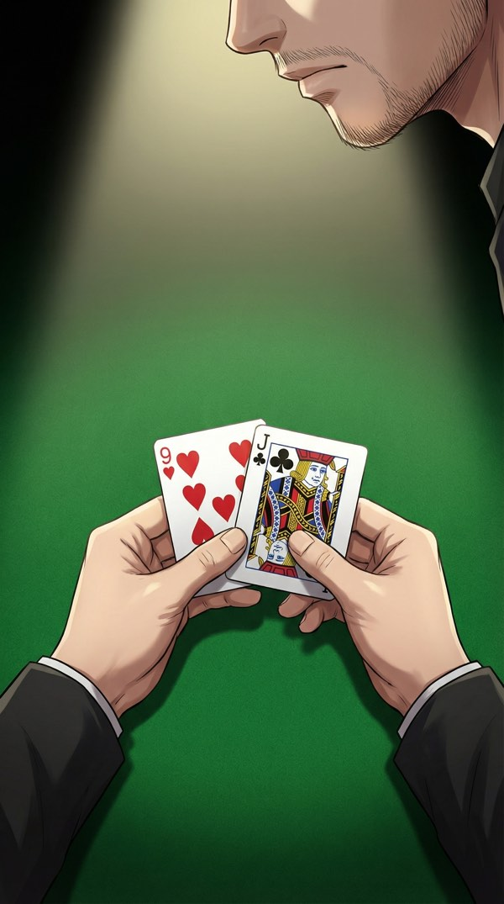
我低头看了眼自己的牌。不算顶级——同花，但不是坚果。换一般情况，这手牌打得稳健就行。
但这不是一般情况。
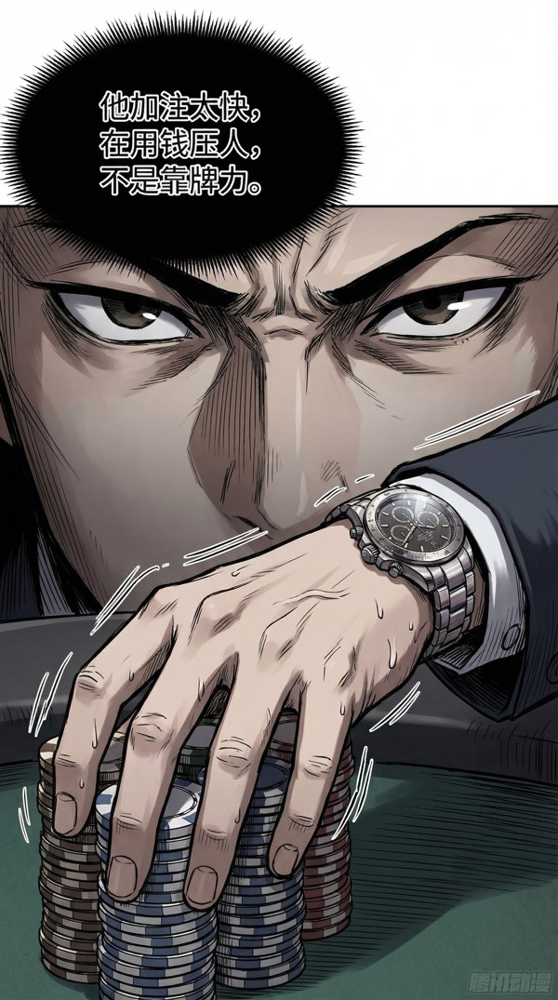
我的目光移到了林少卿的右手上——放在筹码旁边，手指在微微抖动。他自己可能都没注意到。
他的名表很贵，但掩盖不了手部肌肉的紧张收缩。他在怕。
他加注太快，在用钱压人，不是靠牌力。经典的"用资源碾压"策略——和他爸撤我资的逻辑一模一样。
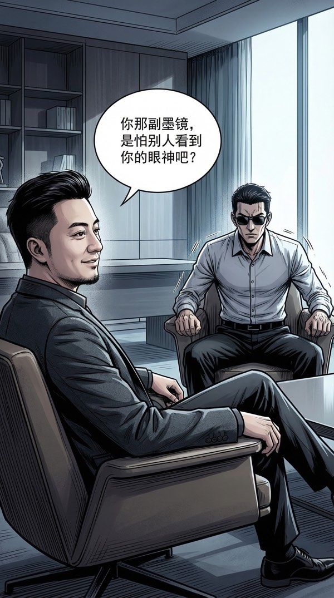
我决定先不动筹码。先动嘴。
我往后一靠，姿态刻意放松，带着一种随意到近乎欠揍的微笑：
我：你那副墨镜，是怕别人看到你的眼神吧？
全场抽了一口冷气。
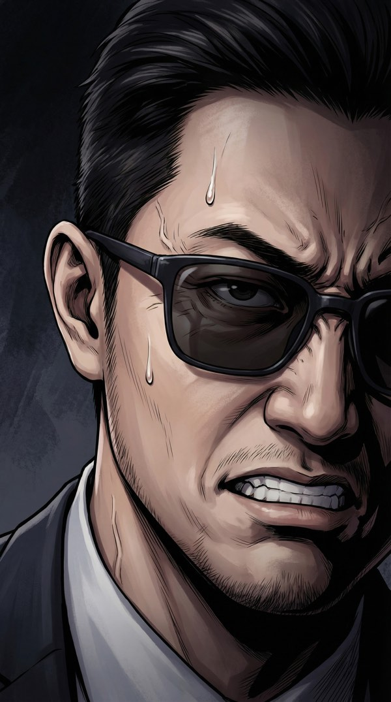
林少卿的下颌肌肉绷紧了，墨镜挡住了眼睛，但挡不住太阳穴上沁出的一滴汗。
面具裂了。
对方的心理防线正在崩塌。这不是牌局——这是渗透测试，而我已经找到了漏洞。
我的牌不是最强的，但对手的心理已经出现裂缝。用钱碾压他，还是稳扎稳打？
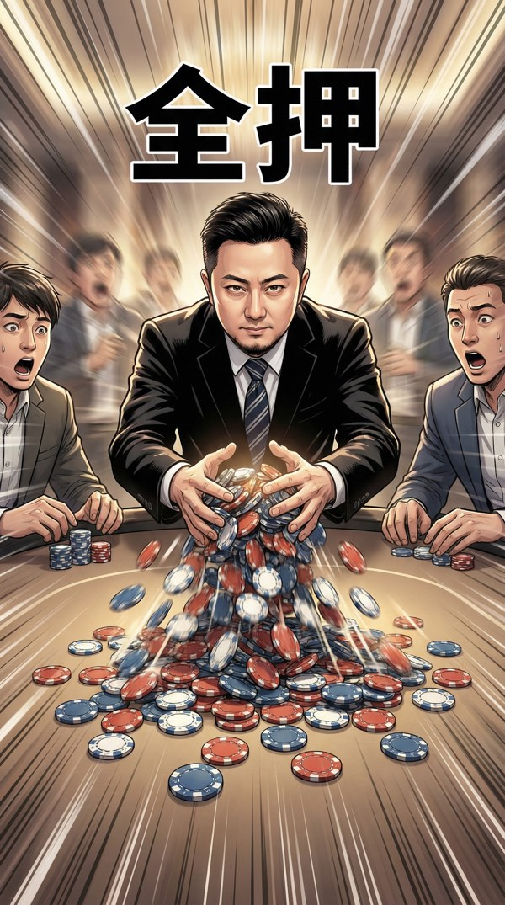
我双手推出所有筹码。一座小山从我这边滑向桌子中央，发出哗啦啦的声响——像极了服务器上线时硬盘阵列同时启动的声音。
我：全押。
两个字。这辈子说过最贵的两个字。
小鱼的手捂住了嘴。金链哥站了起来。老周的茶杯停在了嘴边。
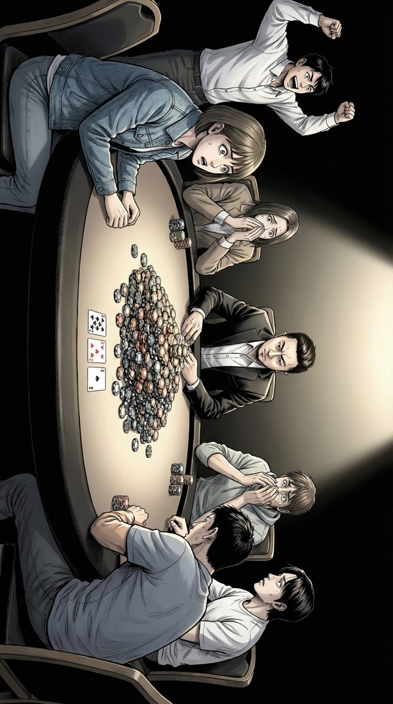
空气像是凝固了。头顶的灯发出轻微的电流声，成了这个房间里唯一的声音。
所有人都在等林少卿的决定。而林少卿——
他在等自己鼓起勇气。
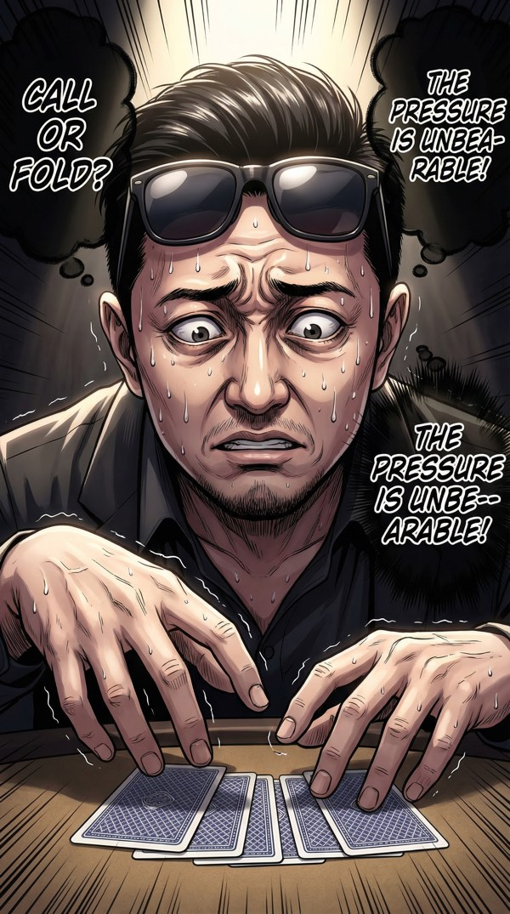
林少卿把墨镜推到了额头上——第一次露出他的眼睛。那双眼睛里没有嚣张，只有恐惧。
他看了看自己的牌，看了看我，又看了看桌上那座筹码山。他的手伸向筹码——又缩了回来。
一秒。两秒。五秒。
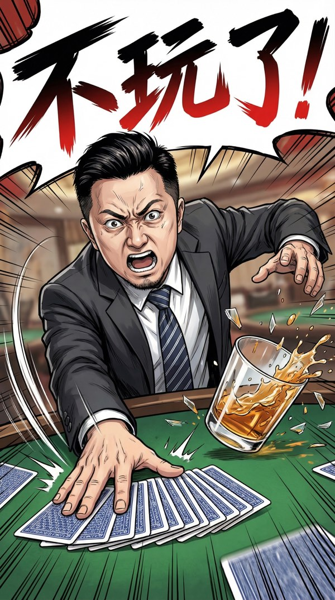
林少卿把牌扣在桌上，一把扫翻了面前的水杯。水杯飞出去，在半空中碎开，玻璃碴和水同时溅落。
林少卿：不玩了！
他站起来，椅子向后摔倒。两个保镖立刻迎上来。他头也不回地往门口走，走到门口停了一秒，没有回头，但声音从牙缝里挤出来：
林少卿：你等着。
门摔上了。震得墙上的灰簌簌往下掉。
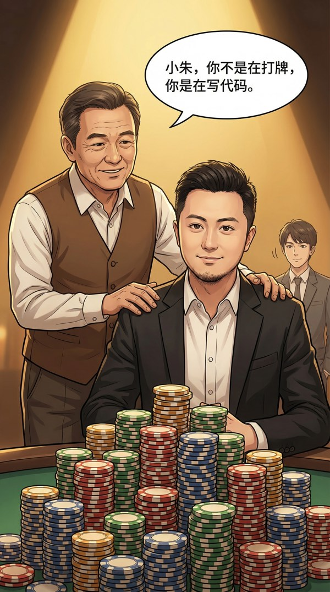
寂静持续了大概三秒。然后老周从角落里慢悠悠地走过来，一手拍在我肩膀上。
老周：小朱，你不是在打牌，你是在写代码。
我笑了。不是苦笑，是真的笑了——今天第一次。
小鱼也凑过来，抱着胳膊上下打量我，像在评估一个值不值得投资的项目。
小鱼：你下次来吗？
我：看情况。
其实心里已经在说：我还会来的。这张牌桌上有一种东西，是三年创业里我一直在找但没找到的——纯粹的、不被资本绑架的博弈。在这里，你的筹码不取决于你认识谁，只取决于你有多了解人。
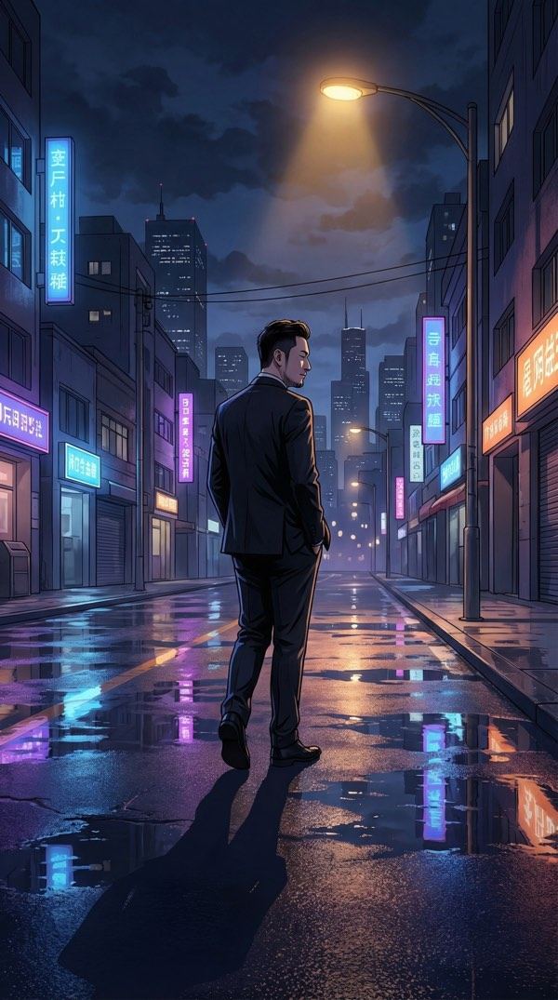
走出茶馆，夜风很凉。雨刚停，路面上积着薄薄一层水，霓虹灯的倒影在脚下碎成一片。
我把手插在兜里走着，脑子里还在复盘每一手牌的决策树。今天赢了多少钱已经无所谓了，重要的是——我发现了一种全新的看世界的方式。
创业的时候我以为世界是算法和数据，被背刺之后我以为世界是利益和背叛。但牌桌告诉我：世界是概率、人心和勇气的函数。
手机震了一下。
来自一个没存过的号码。没有前戏，直奔主题：
未知号码：明天晚上，有一场更大的局。筹码不是钱——是你想要的一切。
我盯着屏幕看了十秒。手指悬在"回复"按钮上方。
一条来路不明的短信。可能是机会，也可能是陷阱。去，还是不去？
明天晚上的牌桌上
赌的不是钱——是命运
第二章 ·「读心之战」· 即将到来